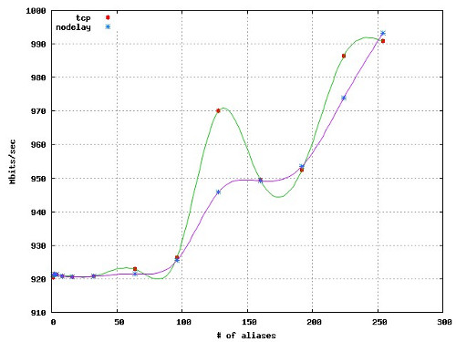

In an earlier post, I had put together a set of benchmarks to measure the performance of IP aliased network interfaces in Linux. While I was expecting a performance degredation due to IP aliasing related book keeping at the kernel level, suprisingly results were pointing out that the overall network throughput measured over the used physical interface increases proportional to the number of aliased interfaces. In this post, I will re-investigate the subject with the lessons I learnt from my previous try.
To begin with, I want to address Chris Siebenmann’s concerns regarding the raw performance of the used network interface card. For this purpose, I first replaced the NIC with a real one (RTL8111/8168B) that is capable of achieving gigabit rates. Then, I started playing with iperf parameters. After a couple of tries, I figured out that the game changer is TCP MSS (maximum segment size) for me. Setting MSS to 1448 helped me to boost my speed to gigabit rates. Other configurations (e.g., disabling TCP delays, i.e., Nagle’s algorithm) did not change the results that much, but I present them hereby anyway.
New results are as follows. (Each pass is set to run for 60 seconds.)
| # of alias | 1 | 2 | 4 | 8 | 16 | 32 | 64 |
| Kbits/sec (tcp) | 920,462 | 921,468 | 921,311 | 920,909 | 920,679 | 920,770 | 922,861 |
| Kbits/sec (nodelay) | 921,261 | 921,184 | 921,179 | 920,832 | 920,629 | 920,732 | 921,521 |
| # of alias | 96 | 128 | 160 | 192 | 224 | 254 | |
| Kbits/sec (tcp) | 926,282 | 969,967 | 949,506 | 952,449 | 986,355 | 990,832 | |
| Kbits/sec (nodelay) | 925,444 | 945,879 | 949,204 | 953,509 | 973,846 | 993,143 |

Ok, the results are cool. But how do we explain them? For this purpose, by finding his name from Wikipedia IP Aliasing page, I got in touch with Juan José Ciarlante – the author of first IP aliasing support in Linux kernel in 1995 – and he kindly replied my questions. Below, I directly quote from his own words.
you may be “just” exploiting the fact that you’re using more TCP connections (==N_WORKERS) as number of aliases increases, and thus increasing the “parallelism of your transferring pipes”, much in a way p2p networks do (spread the downloading between zillion of connections), suggest reading about TCP congestion window control semantics.
Finally, we have a valid answer!